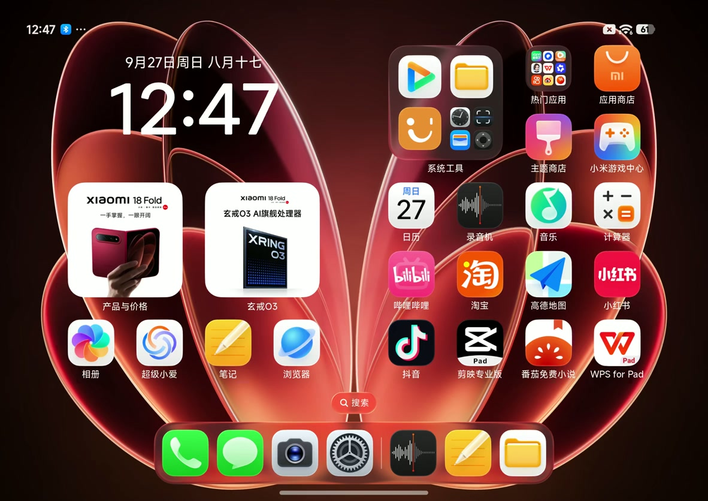

背景先退，内容再落位
控制中心背景约缩至 93.3%，负一屏约缩至 84.9%。各自叠加不同程度的模糊与色调处理，前景另行运动。
桌面底图模糊 · 遮罩玻璃卡片内容 · 高光
下拉控制中心与负一屏。拖动、反向打断，观察浮层如何跟随手指归位。

没有待办事项
下一件美好的事，正在发生。从真实时间戳和逐帧画面出发，把观察、测量与实现假设分开。
控制中心背景约缩至 93.3%，负一屏约缩至 84.9%。各自叠加不同程度的模糊与色调处理，前景另行运动。
逐个按钮追踪：进入时各自收稳；退出时圆形按钮的直径比中心间距收缩得更多。每层独立运动，反向时保留速度。
搜索栏先到，快递卡随后，快捷图标、照片卡、底部应用逐层跟上。同一帧，各层还差的距离不同；同一排图标的相对位置保持。
实现边界 这是依据可见行为制作的交互原型。原系统的渲染器、弹簧参数与手势事件不可直接从录屏还原；静态桌面、应用内容细节及部分卡片文案保留原型简化。